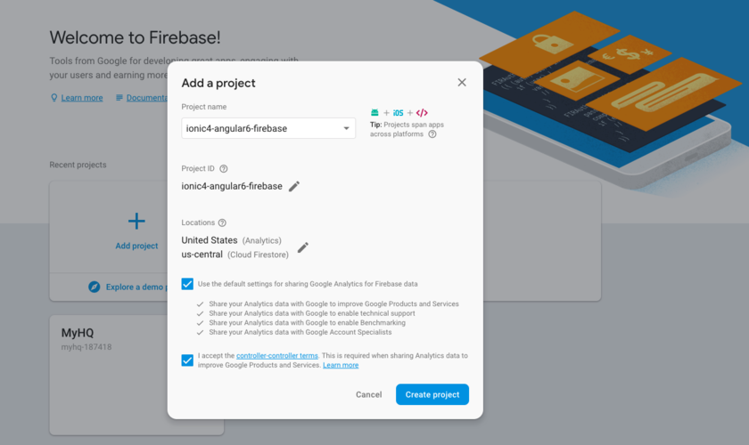
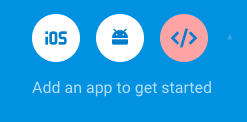
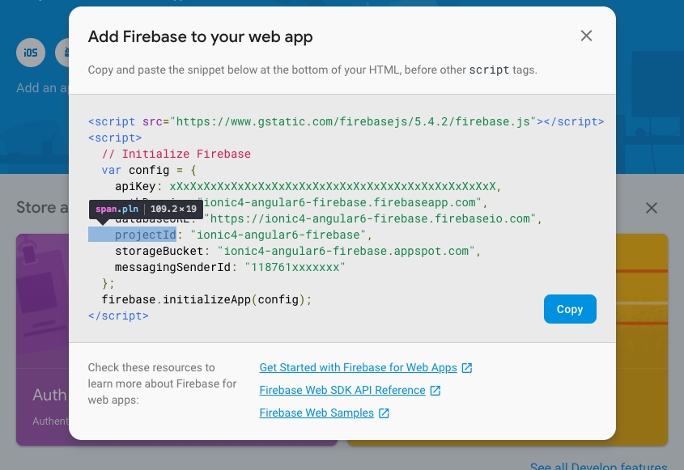
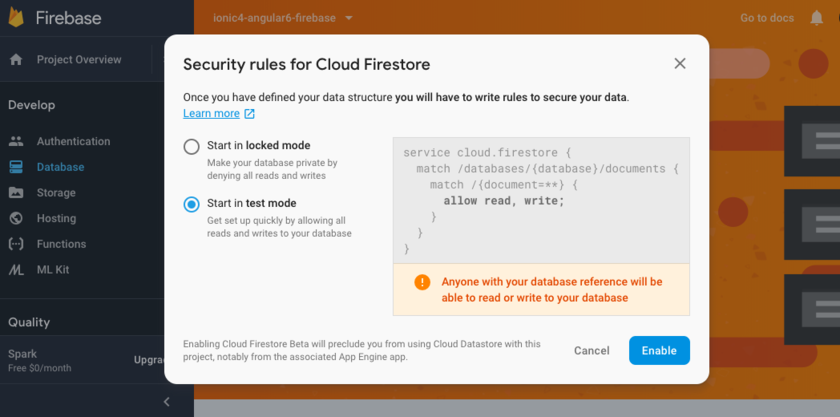
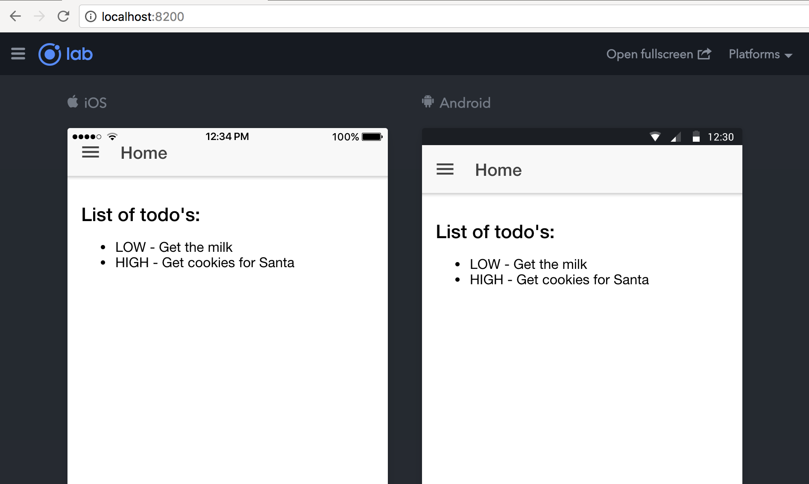
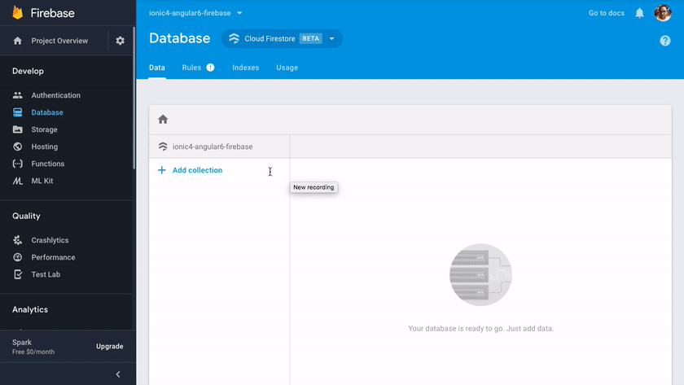
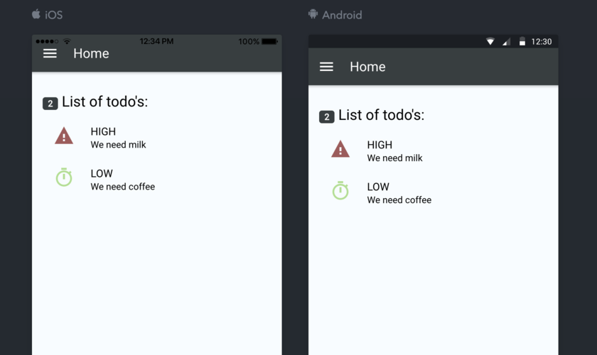

Ionic 4, Angular 6 and Firebase
Intro
In this post we will focus on getting firebase working with Ionic 4 using Angular 6. We will focus on a progressive web app as our sample app, making it fully testable on your local machine, but include the instructions and code for working on both Android and IOS.
Below is a guide to getting a Ionic 4 project up and running using Angular 6 as base and integrating to Firebase for both Auth and DB. Project is availible on github for full working example
Installations
Lets get started with installing the latest version of ionic, adding in cordova and using ionic/lab for making it easy to see our app rendered on a mock page.
- sudo npm install -g ionic
- ionic start ionic4-angular6-firebase sidemenu –type=angular
- Integrate your new app with Cordova to target native iOS and Android? (y/N) y
- Install the free Ionic Pro SDK and connect your app? (Y/n) n
- cd ./ionic4-angular6-firebase
- npm install –save-dev @ionic/lab
- npm install cordova-plugin-ionic –save
- ionic serve -l
Lets add firebase to our app
Create the project on firebase’s portal
- login to firebase
- Create a new project - 
- Setup WPA app by clicking the 3rd icon 
- Your config details - 
Add firebase
Setup
- npm install firebase @angular/fire –save
Create firebase config file
Create an firebase config file (this helps with productionising your app later) under src/app/_config/firebase.ts and place the config details above in this file.
// src/app/_config/firebase.ts
export const firebaseConfig = {
// FireBase config details
apiKey: '<your-key>',
authDomain: '<your-project-authdomain>',
databaseURL: '<your-database-URL>',
projectId: '<your-project-id>',
storageBucket: '<your-storage-bucket>',
messagingSenderId: '<your-messaging-sender-id>'
};Import the modules for firebase
Open /src/app/app.module.ts and inject the firebase providers and load your environment config created above
// `/src/app/app.module.ts`
import { NgModule } from '@angular/core';
import { BrowserModule } from '@angular/platform-browser';
import { RouterModule, RouteReuseStrategy, Routes } from '@angular/router';
import { IonicModule, IonicRouteStrategy } from '@ionic/angular';
import { SplashScreen } from '@ionic-native/splash-screen/ngx';
import { StatusBar } from '@ionic-native/status-bar/ngx';
import { AppComponent } from './app.component';
import { AppRoutingModule } from './app-routing.module';
import { AngularFireModule } from '@angular/fire';
import { firebaseConfig } from './_config/firebase';
import { AngularFirestoreModule } from '@angular/fire/firestore';
import { AngularFireDatabaseModule } from '@angular/fire/database';
// TODO add firebaes auth later
// import { AngularFireAuthModule } from '@angular/fire/auth';
// import { GooglePlus } from '@ionic-native/google-plus/ngx';
@NgModule({
declarations: [AppComponent],
entryComponents: [],
imports: [
BrowserModule,
IonicModule.forRoot(),
AppRoutingModule,
AngularFireModule.initializeApp(firebaseConfig, 'ionic4-angular6-firebase'), // imports firebase/app needed for everything
AngularFirestoreModule, // imports firebase/database, only needed for database features
AngularFireDatabaseModule, // imports firebase/database, only needed for database features
// TODO - AngularFireAuthModule // imports firebase/auth, only needed for auth features
],
providers: [
// TODO - GooglePlus,
StatusBar,
SplashScreen,
{ provide: RouteReuseStrategy, useClass: IonicRouteStrategy }
],
bootstrap: [AppComponent]
})
export class AppModule {}Create a Cloud Firestore DB
Go back to the firebase console (helper link, if you kept the project name the same) and create a Firestore DB in test mode (no security, test and add rules later), creating your first collection (click on “+ add collection”) 
Pull a list of todo’s from our newly created Firestore DB
First up, lets create a model that defines our task class.
ionic generate interface _models/todo
// src/app/_models/todo.ts
export interface Todo {
id: string;
type: string;
desc: string;
}Next, lets use firebase 2 to pull this from firebase it selfe by adding the following code to our home page.
// src/app/home/home.page.ts
import { Component } from '@angular/core';
import { Todo, TodoType } from '../_models/todo';
import { AngularFirestore, AngularFirestoreCollection } from '@angular/fire/firestore';
import { Observable } from 'rxjs';
@Component({
selector: 'app-home',
templateUrl: 'home.page.html',
styleUrls: ['home.page.scss'],
})
export class HomePage {
private todosCollection: AngularFirestoreCollection<Todo>;
todos: Observable<Todo[]>;
constructor(private afs: AngularFirestore) {
this.todosCollection = afs.collection<Todo>('todos');
this.todos = this.todosCollection.valueChanges();
}
addItem(type: string, desc: string) {
const id = this.afs.createId();
const todo: Todo = { id, type, desc};
this.todosCollection.doc(id).set(todo);
}
}// src/app/home/home.page.html
<ion-header>
<ion-toolbar>
<ion-buttons slot="start">
<ion-menu-button></ion-menu-button>
</ion-buttons>
<ion-title>
Home
</ion-title>
</ion-toolbar>
</ion-header>
<ion-content padding>
<h3><ion-badge slot="end"></ion-badge> List of todos:</h3>
<ion-list>
<ion-item *ngFor="let todo of todos | async">
<ion-avatar slot="start" color="primary">
<ion-icon size="large" name="stopwatch" color="success" *ngIf="todo.type == 'LOW'"></ion-icon>
<ion-icon size="large" name="alert" color="warning" *ngIf="todo.type == 'MEDIUM'"></ion-icon>
<ion-icon size="large" name="warning" color="danger" *ngIf="todo.type == 'HIGH'"></ion-icon>
</ion-avatar>
<ion-label>
<h2></h2>
<h3></h3>
</ion-label>
</ion-item>
</ion-list>
</ion-content>Now test and see what works
At this point, if you used the ionic serve -l from installations step, you should see a working app. If not, restart the app and make sure that all your pages are saved (if using vscode)…i tend to forget to save all sometimes.

You should now also be able to add data within the Firestore console which will display within your app. Remember to follow the model definition as type: String, desc: String.

Your ionic lab should look like this 
Whats next
In our next segment we will include Firebase authentication with Google Plus as the provider. We will also theme the app a bit and finish off with an add to-do as part of the over all app.